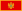

<!DOCTYPE html>
<html lang="pt-br">
<head>
    <meta charset="UTF-8">
    <meta name="viewport" content="width=device-width, initial-scale=1.0">
    <title>População Brasileira Censo 2022</title>
</head>

    <style> 
   
    body{
        font-family: Arial, Helvetica, sans-serif;
    }

    h1{
        font-size: 2rem;
        font-variant: small-caps;
    }

    caption{
        font-size: 1rem;
        padding: 10px;
        background-color: rgb(230, 221, 221);
    }      

    table{
        margin-top: 20px;
        width: 95vw;
        border-collapse: collapse;
        position: relative;
    }

    tbody tr:nth-child(2n){
        background-color: rgb(223, 217, 217);
    }

    thead > tr > th{
        position: sticky;
        top: 0;
        background-color: rgb(75, 74, 74) ;
    }

    td, th{
        border: 1px solid black;
        padding: 10px;
        text-align: center;
    }

    thead{
        background-color: rgb(75, 74, 74);
        color: white;
    }

    .num{
        text-align: right;
        
    }

    col.estado{
        align-items: center;
        display: flex;
    }
</style>

<body>

   <!--Olhar tah header--,>

    <header>
        <h1>Lista de unidades federativas do Brasil por população </h1>
        
        <h3>Fonte: <a href="https://pt.wikipedia.org/wiki/Lista_de_unidades_federativas_do_Brasil_por_popula%C3%A7%C3%A3o" target="_blank">Wikipédia</a></h3>
        <table>
            <colgroup>

                <col class="numero">
                <col class="estado">
                <col class="cgrupo" span="5">        
            </colgroup>    
        
        
        </header>

        <caption>
            Esta é uma lista da população das unidades federativas brasileiras segundo dados divulgados pelo Instituto Brasileiro de Geografia e Estatística (IBGE) em 28 de junho de 2023, com base no Censo de 2022.
        </caption>

        
        <thead>
            <tr>
                <th scope="col" >Posição</th>	
                <th scope="col" >Unidade federativa	</th>
                <th scope="col" style="width: 50px;">População (Censo de 2022)</th>
                <th scope="col" style="width: 50px;">População (Censo de 2010)</th>	
                <th scope="col" >Mudança	</th>
                <th scope="col" >% da pop. total</th>	
                <th scope="col" >País comparável (habitantes)</th>
                     
            
            </tr>

        </thead>
       <tbody>
                <tr>
                <td>1</td>	 
                <td> São Paulo </td>	
                <td class="num">44 411 238</td>	
                <td class="num">41 262 199</td>	
                <td>+7.63%</td>	
                <td>21,88%</td>	 
                <td> Argentina <br>(46 621 847)</td> 
            </tr>
            
            <tr>            
                <td>2</td>
                <td> Minas Gerais</td>
                <td class="num">20 538 718</td>
                <td class="num">19 597 330</td>
                <td>+4.81%</td>
                <td>10,11%</td>
                <td>  Burquina Fasso <br>(20 903 273)</td>            
            </tr>

            <tr>
                <td>3</td>	 
                <td> Rio de Janeiro	</td>
                <td class="num">16 054 524</td>	
                <td class="num">15 989 929</td>	
                <td>+0.40%</td>	
                <td>7,91%</td>	
                <td>  Camboja <br>(16 718 965)</td>
            </tr>

            <tr>
                <td>4	
                <td> Bahia 
                <td class="num">14 141 626	
                <td class="num">14 016 906	
                <td>+0.89%	
                <td>6,96%	
                <td>  Zimbabwe <br>(14 862 924)
            </tr>

            <tr>
                <td>5	 
                <td> Paraná	
                <td class="num">11 444 380	
                <td class="num">10 444 526	
                <td>+9.57%	
                <td>5,64%	 
                <td>  Tunísia <br>(11 818 619)
            </tr>

            <tr>
                <td>6	 
                <td> Rio Grande do Sul	
                <td class="num">10 882 965	
                <td class="num">10 693 929	
                <td>+1.76%	
                <td>5,36%	
                <td>  Portugal <br> (10 343 066)
            </tr>

            <tr>
                <td>7	 
                <td> Pernambuco	
                <td class="num">9 058 931	
                <td class="num">8 796 448	
                <td>+2.98%	
                <td>4,46%	 
                <td>  Áustria <br> (9 006 398)
            </tr>

            <tr>
                <td>8	 
                <td> Ceará	
                <td class="num">8 794 957	
                <td class="num">8 452 381	
                <td>+4.05%	
                <td>4,33%	 
                <td>  Papua-Nova Guiné <br> (8 947 024)
            </tr>

            <tr>
                <td>9	
                <td> Pará 	
                <td class="num">8 121 025	
                <td class="num">7 581 051	
                <td>+7.12%	
                <td>4,1%	 
                <td>  Suíça <br>(8 654 622)
            </tr>

            <tr>
                <td>10	 
                <td> Santa Catarina	
                <td class="num">7 610 361	
                <td class="num">6 248 436	
                <td>+21.78%	
                <td>3,75%	
                <td>  Laos Laos <br>(7 749 595)
            </tr>

            <tr>
                <td>11	 
                <td> Goiás	
                <td class="num">7 056 495	
                <td class="num">6 003 788	
                <td>+17.51%	
                <td>3,47%	 
                <td>  Bulgária <br>(6 948 445)
            </tr>

            <tr>
                <td>12	 
                <td> Maranhão	
                <td class="num">6 775 805	
                <td class="num">6 574 789	
                <td>+3.05%	
                <td>3,34%	 
                <td>  Bulgária <br>(6 948 445)
            </tr>

            <tr>
                <td>13	 
                <td> Paraíba	
                <td class="num">3 974 687	
                <td class="num">3 766 528	
                <td>+5.52%	
                <td>1,96%	
                <td>   Geórgia <br> (3 989 167)
            </tr>

            <tr>
                <td>14
                <td> Amazonas
                <td class="num">3 941 613
                <td class="num">3 483 985
                <td>+13.12%
                <td>1,94%
                <td>  Geórgia <br> (3 989 167)
            </tr>

            <tr>
                <td>15	 
                <td> Espírito Santo	
                <td class="num">3 833 712	
                <td class="num">3 514 952	
                <td>+9.06%	
                <td>1,89%	 
                <td>  Geórgia <br> (3 989 167)
            </tr>

            <tr>
                <td>16	 
                <td> Mato Grosso	
                <td class="num">3 658 649	
                <td class="num">3 035 122	
                <td>+20.55%	
                <td>1,8%	 
                <td>  Geórgia <br>(3 989 167)
            </tr>

            <tr>
                <td>17	 
                <td> Rio Grande do Norte	
                <td class="num">3 302 729	
                <td class="num">3 168 027	
                <td>+4.24%	
                <td>1,63%	 
               <td>   Uruguai <br>(3 473 730)
            </tr>

            <tr>
                <td>18	 
                <td> Piauí	
                <td class="num">3 271 199	
                <td class="num">3 118 360	
                <td>+4.88%	
                <td>1,61%	 
               <td>   Bósnia e Herzegovina <br> (3 280 819)
            </tr>

            <tr>
                <td>19	 
                <td> Alagoas	
                <td class="num">3 127 683	
                <td class="num">3 120 494	
                <td>+0.23%	
                <td>1,54%	
                <td>  Mongólia <br> (3 278 290)
            </tr>

            <tr>
                <td>20	 
                <td> Distrito Federal	
                <td class="num">2 817 381	
                <td class="num">2 570 160	
                <td>+9.62%	
                <td>1,39%	 
                <td>  Armênia <br> (2 963 243)
            </tr>

            <tr>
                <td>21	 
                <td> Mato Grosso do Sul	
                <td class="num">2 757 013	
                <td class="num">2 449 024	
                <td>+12.56%	
                <td>1,36%	 
                <td>  Albânia <br> (2 877 797)
            </tr>

            <tr>
                <td>22	 
                <td> Sergipe	
                <td class="num">2 209 558	
                <td class="num">2 068 017	
                <td>+6.86%	
                <td>1,09%	 
                <td>  Gabão <br> (2 225 734)
            </tr>

            <tr>
                <td>23	 
                <td> Rondônia	
                <td class="num">1 581 196	
                <td class="num">1 562 409	
                <td>+1.19%	
               <td> 0,78%	 
                <td>  Bahrein <br> (1 701 575)
            </tr>

            <tr>
                <td> 24	 
                <td> Tocantins	
                <td class="num">1 511 460	
                <td class="num">1 383 445	
                <td>+9.25%	
                <td>0,74%	 
                <td>  Guiné Equatorial <br> (1 402 985)
            </tr>

            <tr>
                <td>25	 
                <td> Acre	
                <td class="num">830 018	
                <td class="num">733 559	
                <td>+13.15%	
                <td>0,41%	
                <td>   Comores <br>(869 601)
            </tr>

            <tr>
                <td>26	 
                <td> Amapá	
                <td class="num">733 759	
                <td class="num">669 526	
                <td>+9.56%	
                <td>0,36%	 
                <td>  Guiana <br>(786 552)
            </tr>

            <tr>
                <td>27	 
                <td> Roraima	
                <td class="num">636 707	
                <td class="num">450 479	
                <td>+41.26%	
                <td>0,31%	 
                <td>  Montenegro <br>(649 335)
            </tr>    
</tbody>


    </table>
    
</body>
</html>